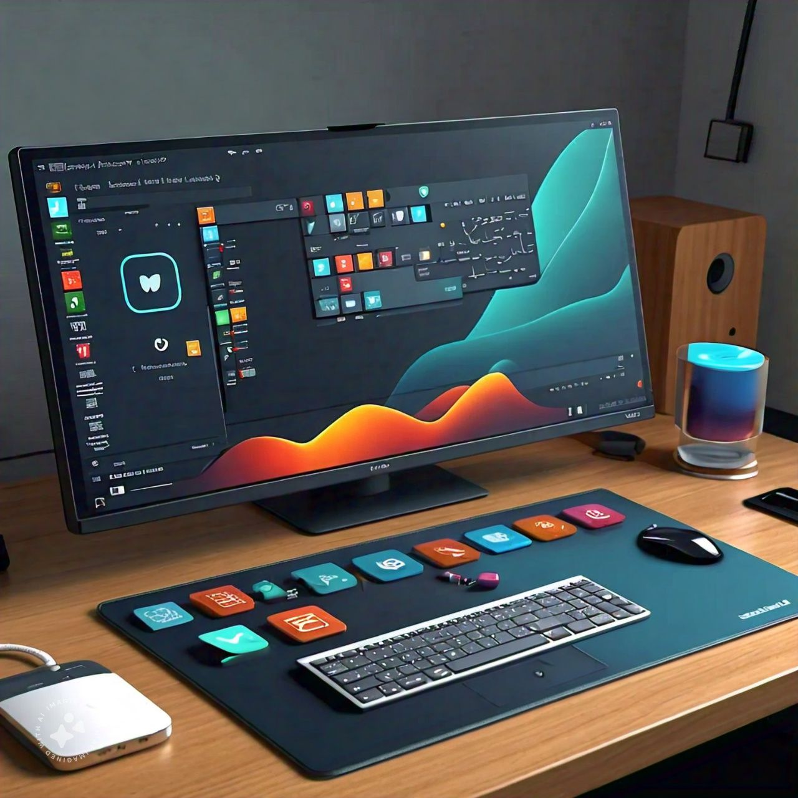

Bienvenido/a
La idea principal es desarrollar una distro que sea altamente configurable, ligera y que incluya las herramientas esenciales para programar, pero con la posibilidad de adaptarse a diversas necesidades. Me enfoqué en la simplicidad, rendimiento y una optimización continua.

Esto es un esfuerzo orientado a la creación de una distribución de Linux personalizada, diseñada para ofrecer una experiencia eficiente, flexible y segura. Este proyecto tiene como objetivo proporcionar una plataforma que permita a usuarios de distintos niveles, desde principiantes hasta avanzados, aprovechar al máximo las capacidades de Linux.